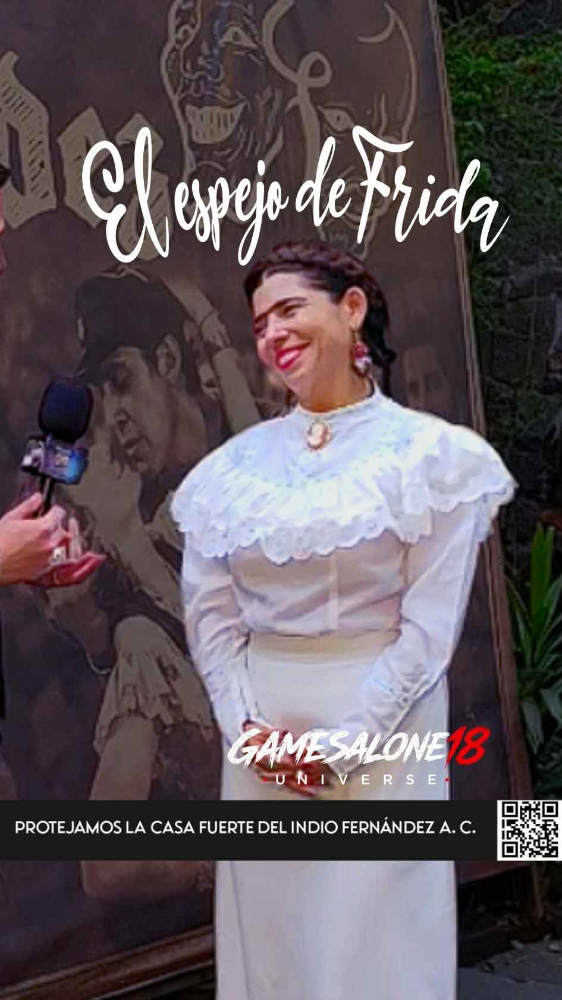

Crear una obra alrededor de una figura como Frida Kahlo implica mucho más que llevar un personaje reconocido al escenario. En El Espejo de Frida, distintas disciplinas artísticas forman parte de una propuesta construida para el espacio teatral.
GamesAlone18 Universe conversó con Diana Carranza, autora y protagonista de la puesta en escena, para conocer cómo fue concebido el proyecto y cómo se articulan los distintos elementos que forman parte de la obra.
Crear la obra y convertirse en Frida
Diana Carranza no solamente participa en la creación de El Espejo de Frida. Sobre el escenario también asume el personaje principal: Frida Kahlo.
Durante la entrevista abordamos esa doble responsabilidad: construir una propuesta desde su concepción y, posteriormente, formar parte de ella desde el escenario.
“ELLA CREÓ EL ESPEJO… Y TAMBIÉN TUVO QUE CONVERTIRSE EN FRIDA.
La frase anterior es un encabezado editorial de GamesAlone18 Universe y no una cita textual atribuida a Diana Carranza.

Una puesta construida desde distintas disciplinas
Uno de los temas centrales de la conversación fue la estructura de la puesta en escena. El Espejo de Frida incorpora diferentes recursos para construir su propuesta teatral.
La música en vivo, la danza y el arte forman parte de los elementos que acompañan el desarrollo escénico y contribuyen a construir la experiencia presentada ante el público.
Casa Fuerte Emilio “El Indio” Fernández
La temporada de septiembre de El Espejo de Frida se presenta en Casa Fuerte Emilio “El Indio” Fernández, en Ciudad de México.
La última función de esta temporada está programada para el 26 de septiembre de 2026.
Detrás del escenario
La conversación con Diana Carranza permite acercarse al proceso detrás de una obra desde la perspectiva de quien participa tanto en su creación como en su interpretación.
Con esta entrevista, GamesAlone18 Universe continúa documentando las historias, los proyectos y las personas que forman parte de la actividad cultural y teatral.
Diana Carranza: El Espejo de Frida
Video de la entrevista disponible próximamente.